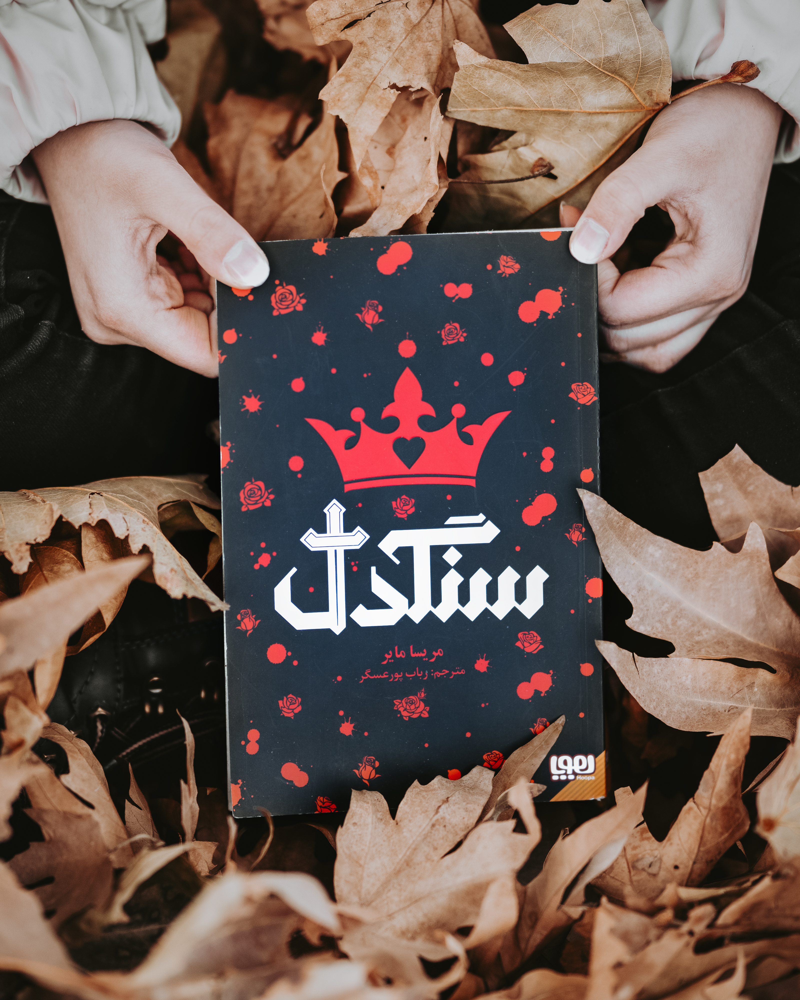

داستانهایی از دنیای گلها، کتابها و زندگی

دنیای کتابها
گاهی چند صفحه کتاب میتواند ما را از شلوغی روزمره دور کند و به دنیایی تازه ببرد. کتابها فرصتی برای آرامش، خیالپردازی و شناخت بیشتر خودمان هستند.